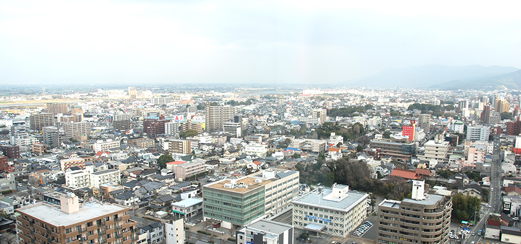
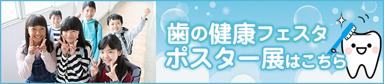

本文へ移動
〒830-0013 福岡県久留米市櫛原町98
TEL 0942-32-7063
メニューを開く
歯科医師会のご紹介
訪問歯科診療
休日診療
健診事業
地域の歯医者さん

久留米地域の皆様とともに
一般社団法人 久留米歯科医師会
休日診療のご案内
日曜・祝日の当番医をご案内します
地域の歯医者さん
地域から、医院を探せます
健診事業のご案内
乳幼児から高齢者までの歯科健診
訪問歯科診療のご案内
ご自宅・施設への訪問診療

お知らせ・トピックス
2026年6月3日
令和８年度歯科助手講習会のお知らせ
2026年6月3日
令和８年度「歯の健康フェスタ」開催のお知らせ
2025年7月1日
令和７年度歯科助手講習会のお知らせ
2025年5月14日
令和７年度「歯の健康フェスタ」開催のお知らせ
2024年2月27日
令和６年 ｢健康フェスティバル｣開催のお知らせ
2023年6月23日
令和５年度「歯の健康フェスタ」終了のお知らせ
2022年5月16日
令和４年度「歯の健康フェスタ」開催のお知らせ
イベント情報の一覧
受付歯科医院を探す
事業ごとに、受付をしている歯科医院を、地域別にご覧いただけます。
1歳半・3歳児健診
フッ素塗布
歯っぴー検診
周術期ケア
妊婦歯科健診
そのほかのご案内